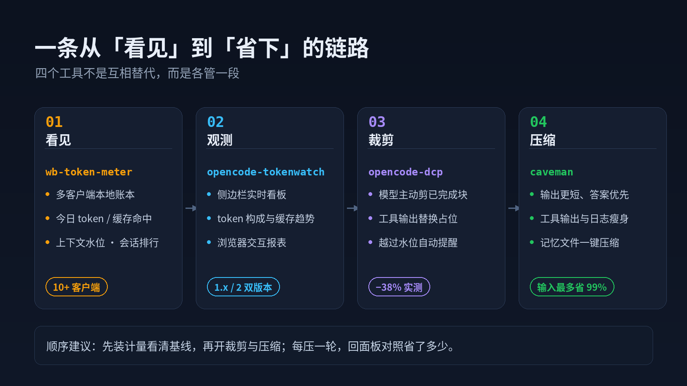
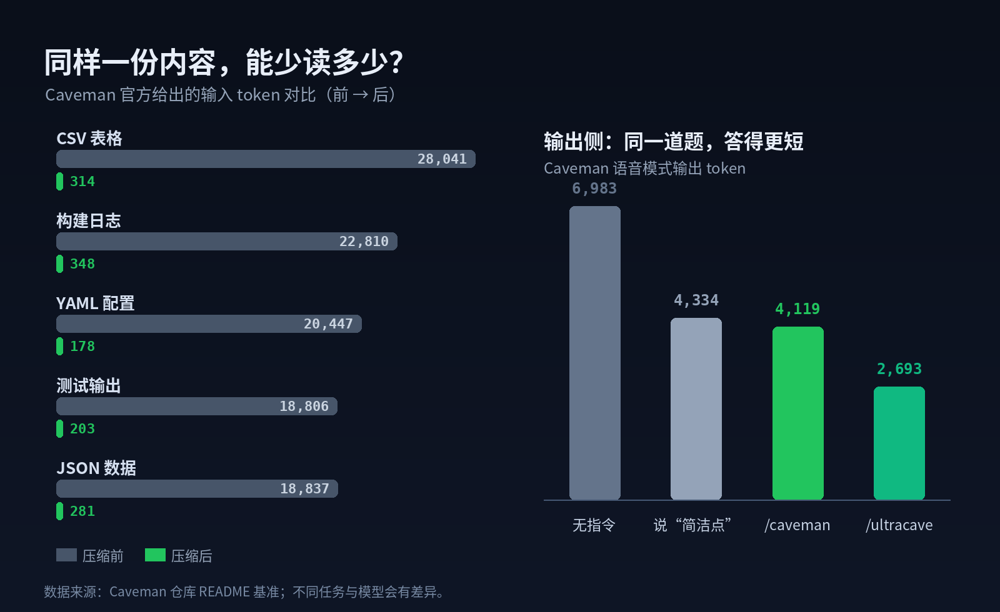
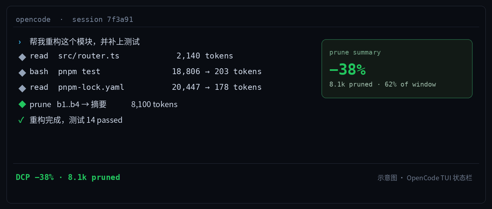
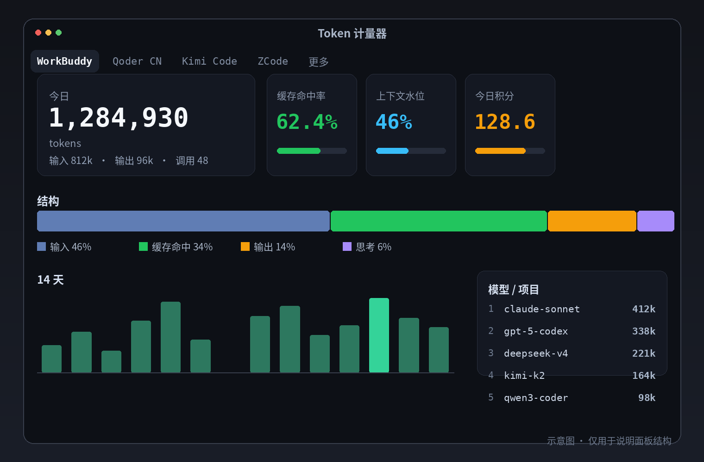

月底打开账单，往往只有一行总数。
输入花了多少、输出花了多少、缓存命中多少，哪个会话在偷偷烧钱，一概说不清。于是所有“省 token”的动作都变成了玄学：关两个插件、把提示词删短一点，然后祈祷下个月便宜些。
看不见的账，是省不下来的。
这篇讲四个工具。两个负责把账看清楚，两个负责把账压下去。它们不互相替代，拼在一起才是一条完整的链路。
STEP 01
先把四件事分开
“省 token”听起来是一件事，拆开其实是四件：
计量——知道今天用了多少、花在哪个模型上；
观测——知道这些 token 是系统提示词、你的输入、工具返回，还是模型输出；
裁剪——把对话里已经用不上的大块内容从上下文中拿掉；
压缩——让模型说得更短，也让喂进去的日志、JSON、表格更薄。
四个工具正好对得上这四段，顺序也基本是从左到右。

四个工具的分工：先把账看见，再把上下文与输出压下来
下面按“先省、后看”的顺序一个个说，最后再讲怎么组合。
STEP 02
Caveman：让模型少说，也少读
Caveman 的名字很直白——把 agent 变成“穴居人”，话少、抓重点。它自己的说法是：让 AI agent 说得更少、读得更少，代码保持精确，脑子照样够用。
安装很轻，一条命令起：
npx @caveman-ai/cli@latest
如果你在 Claude Code 里用，也可以按插件方式装：
claude plugin marketplace add JuliusBrussee/caveman
claude plugin install caveman@caveman
它把能力切成几块，常用的有三个开关：/caveman 是标准压缩，/ultracave 更激进，/caveman-compress 用来压缩 CLAUDE.md 这类记忆文件。想恢复原样，输入 caveman off 即可。
真正有意思的是它省在哪。仓库里给了一组很硬的对比：同一份内容，压缩前后差了一到两个数量级。

左：输入侧大幅瘦身；右：同一道题的输出 token 对比（数据来自 Caveman 仓库）
CSV 表格从 28,041 token 压到 314，构建日志从 22,810 压到 348，YAML 从 20,447 压到 178。测试输出、JSON 也都是同样的量级。这类内容本来信息密度就低，模型却要逐字读完，压掉的是纯噪声。
输出侧靠的不是“请简洁一点”这种软要求。官方基准里，没有任何指令时输出 6,983 token，加一句“Answer concisely”降到 4,334，用 /caveman 是 4,119，/ultracave 直接到 2,693。
一句“简洁点”省不下多少，改写输出习惯才省得多。
记忆文件的压缩也挺实用。五个文件合计从 6,198 token 降到 4,138，降幅 22.8% 到 49.1% 不等，标题、代码、路径都保留，并且会自动留备份。
它的好处是跨客户端：Claude Code、Codex、Gemini、OpenCode 都能挂。代价也写在明面上——压缩规则本身要占约 1,160 个输入 token；如果你用的是按请求计费的套餐（比如部分 Copilot 场景），答案变短并不会让你少付钱。
STEP 03
opencode-dcp：把用不上的上下文剪掉
如果 Caveman 是在出口拧小水龙头，DCP 就是在水箱里捞走已经用不上的东西。
它的全称是 Dynamic Context Pruning，动态上下文裁剪，专为 OpenCode V2 写的。安装只要一行：
opencode plugin add opencode-dcp
装完会自动写进全局配置，TUI 面板也跟着加载。想按项目调参数，就在 opencode.jsonc 里加一段：
{
"plugins": [
{ "package": "opencode-dcp",
"options": { "maxContextLimit": "70%" } }
]
}
它的关键设计是：只改发给模型的那份 transcript，磁盘上的会话历史一个字不动。所以你随时能回看原文，不会因为“压缩”把记录弄丢。
具体怎么剪，交给模型自己判断。它有一个 prune 工具，把已经结束的对话块用一段摘要替换。区间用边界 ID 寻址，消息是 m0001 这样，压缩块是 b1 这样。模型会挑互不重叠的区间，每段写一条摘要；如果新区间覆盖了老压缩块，写进 (bN) 就把那块内容继续带上，不写就等于丢掉。
除了对话块，过期和报错的工具输出也会被换成短占位符。有些东西绝对不能碰，就用 glob 保护起来：protectedTools 里写 “mcp*”，protectedFilePatterns 里写 “secrets/**”。
用量越过 maxContextLimit 时，它会提醒模型“该剪了”，并把裁剪预算和模型窗口一起报出来。剪完下一次发送会得到确认。TUI 底部会实时显示省了多少：

状态栏里的 DCP −38% · 8.1k pruned，就是最近一次发送省下的量（示意图）
没有可剪的块时，它显示的是窗口压力，比如 DCP idle · 62% of window。想手动触发一次，输入 /dcp-prune，后面可以跟 focus 说明重点。
另外两个默认策略值得知道：去重和清理报错。它们的作用不只是省 token，还能让空闲会话的提示词前缀保持稳定——这对命中缓存很重要，前缀一变，缓存就白存了。
STEP 04
opencode-tokenwatch：OpenCode 里的实时仪表盘
前两个都在改行为，tokenwatch 不一样，它只负责看。但“看”恰恰是省的第一步。
装法也很直接：
npm install opencode-tokenwatch
{
"plugin": ["opencode-tokenwatch"]
}
重开 OpenCode，侧边栏就会多一块面板。它给的东西比较细：
· 每个模型的输入、输出 token，预估花费，缓存命中率；
· 首字延迟（TTFT）和按生成耗时加权的 TPS；
· 把 token 拆成系统提示词、用户输入、工具调用、模型输出四类；
· 缓存命中率旁边带箭头，告诉你最近几次是在涨还是在跌。
最后这一类特别有用。很多人以为 token 都花在自己写的话上，一拆开才发现，大头是工具返回和系统提示词。定位到大头，才知道该压哪里。
在终端里输入 /usage，会在浏览器里打开一份 ECharts 交互报表，能看历史趋势、模型横向对比和失败请求统计，也能一键导出 JSON 或 Markdown，默认落在 ~/.opencode/reports/ 目录。
它借用 OpenCode Server 的插件能力在后台静默采集，Desktop、CLI、API 的会话都会记；同时兼容 OpenCode 1.x 和 2 beta，Node 18 以上即可。
仪表盘本身不省 token，它只是告诉你该从哪里省。
STEP 05
wb-token-meter：托盘上的一本多端账本
前面几个要么在 OpenCode 里，要么是跨 agent 的规则层。但现实是，很多人同时装着 WorkBuddy、Trae、Kimi Code、ZCode 好几个客户端，账本散在各处，谁也不认识谁。
wb-token-meter 干的就是这件事：一个常驻托盘的本地用量面板，同时看十个客户端的消耗。它是第三方开源工具（MIT），Electron 写的，跟各家官方都没关系。
去它的 Releases 下载就行。Windows 有安装版和免安装版两个 exe，macOS 有 Apple 芯片和 Intel 两个 dmg。
它支持的源包括 WorkBuddy、Qoder CN、Kimi Code、ZCode、Xiaomi MiMo、Reasonix、DeepSeek Harness、Trae CN、OpenCode 和 OpenCode Go。面板右上角随时切，各算各的账，互不影响。

面板结构示意：今日用量、上下文水位、token 构成、14 天趋势与模型排行
它把信息分成几块，基本覆盖了日常想知道的所有角度：
· 今日：token 总量，下面拆输入、输出、调用次数；没有积分体系的数据源会把第二个大数字换成缓存命中率；
· 上下文：一根带红线区的仪表，显示当前会话用了多少，70% 和 90% 两条分界印在刻度上；
· 结构：输入、缓存命中、输出、思考四块的分布；
· 14 天：每日柱状图，没用的日子补成 0 高度，时间轴不会跳；
· 活跃：近 26 周的贡献图，颜色越深用量越大；
· 模型 / 项目、会话：按用量排行，能追到具体某个会话的 token 和上下文水位。
托盘图标本身也是一圈进度环，显示当前活跃会话的上下文水位，颜色随水位变化；鼠标悬停能看到今日 token。另外还有一个桌面小胶囊，单击能展开详情卡，拖动位置会被记住。
隐私这块做得比较克制：除 OpenCode Go 的额度查询、Trae CN 的积分查询和更新检查外，所有数据都在本地读取和计算，不修改任何原始文件。出站请求只有三个，而且只带各自的凭证。
有几个已知限制要提前知道。Qoder CN 本地根本没有 token，只有积分和上下文水位比例，所以它的 token 结构卡是整块收起的；Trae CN 的用量库是加密的，密钥得从运行中的进程内存里取，App 没在跑的时候 token 会显示 0，取到密钥后一次全量扫描大约 21 秒；还有些源的上下文上限拿不到，只能显示已用量，不给百分比。
STEP 06
怎么组合，以及哪些地方别踩坑
顺序建议很明确：先装计量，再开裁剪，最后压缩。没有基线就调参，等于闭着眼睛改代码。
第一步，装 wb-token-meter 或 tokenwatch，先看清一周的真实消耗；
第二步，在 OpenCode 里开 DCP，把 maxContextLimit 设成 70% 左右，先只开默认策略；
第三步，用 Caveman 压工具输出和记忆文件，输出侧从 /caveman 开始，别一上来就 /ultracave；
第四步，回面板对照，看省下来的到底是输入、输出，还是只是缓存变了。
几个边界必须说清楚。
裁剪会丢信息。DCP 只改发出去的 transcript，这点很安全，但剪掉的内容模型确实看不到了。mcp 工具和密钥目录一定要放进保护规则，重要的架构决策别让它压成一句摘要。
压缩有固定成本。Caveman 的规则本身要占一千多个输入 token，短会话里可能得不偿失；按请求计费的套餐，输出变短也不省钱。
别一次全开。同时上裁剪和压缩，省了也说不清是谁省的，出了问题更难回滚。一次只动一个变量。
计量工具有开销。tokenwatch 在后台采集，wb-token-meter 首次扫描可能要几秒，这些都是真实成本，只是很小。
还有一点容易忽略：上下文不是越短越好。压得太狠，模型反复问你要同一份文件，来回几轮反而更贵。真正的目标是“该在的都在，不该在的别占位”。
先量化，再优化。这句话在 token 上同样成立。
四个工具，两种角色：wb-token-meter 和 opencode-tokenwatch 让你看见账，opencode-dcp 和 Caveman 让你把账压下来。先看见，再动手，省下来的每一分钱都有出处。
参考：JuliusBrussee/caveman、arafays/opencode-dcp、TTWK/opencode-tokenwatch、FightZhanAng/wb-token-meter 四个开源仓库的 README。文中面板与终端截图为结构示意，非产品真实界面；具体功能与参数以仓库最新版本为准。